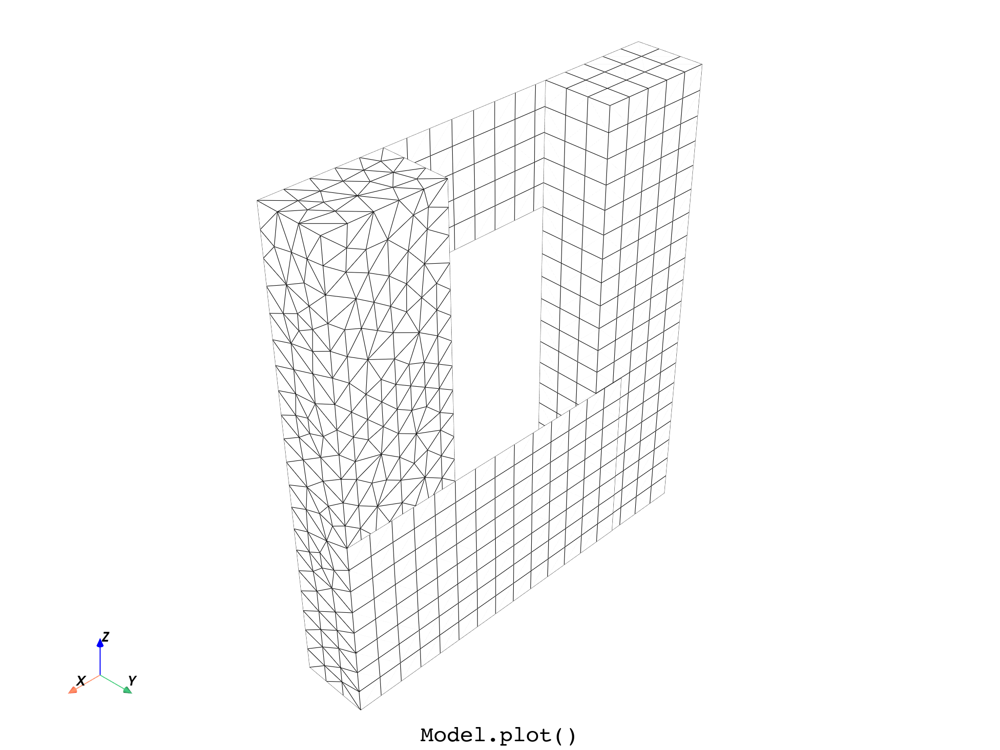
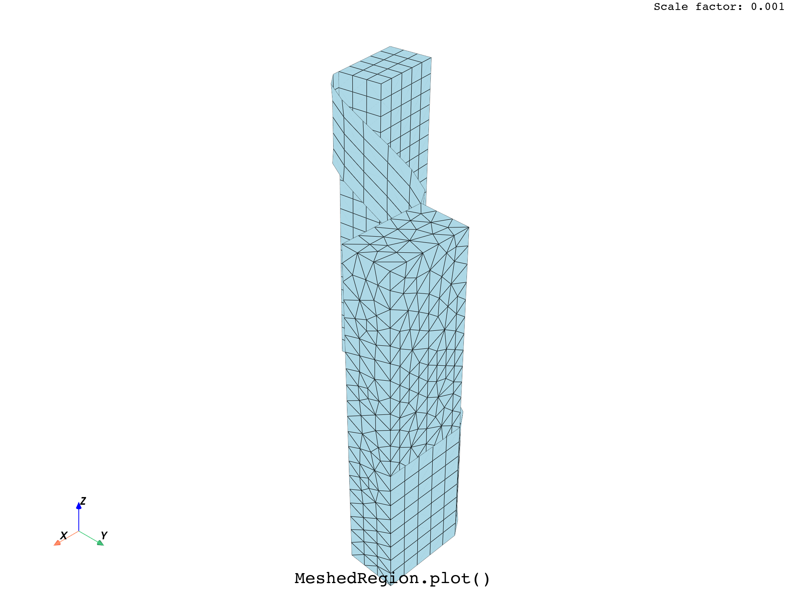
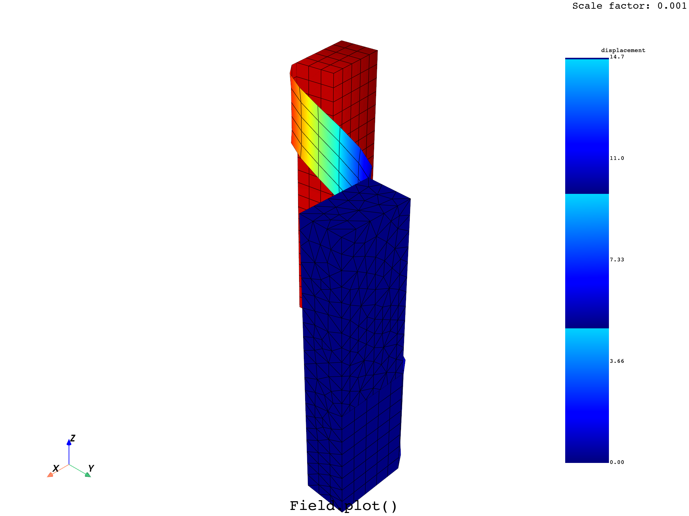
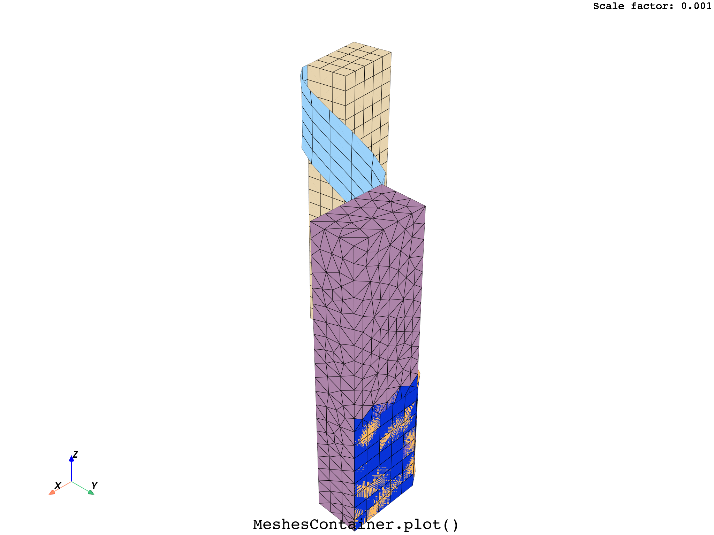
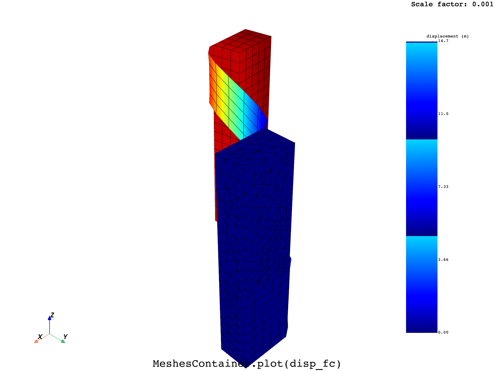

Note
Go to the end to download the full example code.
Warp the mesh by a field for plotting#
This example shows how to warp the mesh by a vector field, enabling to plot on the deformed geometry.
- 
- 
- 
- 
- 
DPF Model
------------------------------
Static analysis
Unit system: MKS: m, kg, N, s, V, A, degC
Physics Type: Mechanical
Available results:
- displacement: Nodal Displacement
- reaction_force: Nodal Force
- stress: ElementalNodal Stress
- elemental_volume: Elemental Volume
- stiffness_matrix_energy: Elemental Energy-stiffness matrix
- artificial_hourglass_energy: Elemental Hourglass Energy
- thermal_dissipation_energy: Elemental thermal dissipation energy
- kinetic_energy: Elemental Kinetic Energy
- co_energy: Elemental co-energy
- incremental_energy: Elemental incremental energy
- elastic_strain: ElementalNodal Strain
- element_orientations: ElementalNodal Element Euler Angles
- structural_temperature: ElementalNodal Structural temperature
- contact_status: ElementalNodal Contact Status
- contact_penetration: ElementalNodal Contact Penetration
- contact_pressure: ElementalNodal Contact Pressure
- contact_friction_stress: ElementalNodal Contact Friction Stress
- contact_total_stress: ElementalNodal Contact Total Stress
- contact_sliding_distance: ElementalNodal Contact Sliding Distance
- contact_gap_distance: ElementalNodal Contact Gap Distance
- contact_surface_heat_flux: ElementalNodal Total heat flux at contact surface
- num_surface_status_changes: ElementalNodal Contact status changes
- contact_fluid_penetration_pressure: ElementalNodal Fluid Penetration Pressure
------------------------------
DPF Meshed Region:
7079 nodes
4220 elements
Unit: m
With solid (3D) elements, shell (2D) elements, shell (3D) elements
------------------------------
DPF Time/Freq Support:
Number of sets: 1
Cumulative Time (s) LoadStep Substep
1 1.000000 1 1
from ansys.dpf import core as dpf
from ansys.dpf.core import examples
# Get and show the initial model
model = dpf.Model(examples.find_multishells_rst())
print(model)
model.plot(title="Model", text="Model.plot()")
# Define a scaling factor and a step for the field to be used for warping.
scale_factor = 0.001
step = 1
# Define a result to deform by
disp_result = model.results.displacement.on_time_scoping([step])
disp_op = disp_result()
# Get the displacement field
disp_fc = disp_result.eval()
disp_field = disp_fc[0]
# Get the mesh and plot it as a deformed geometry using a Result, an Operator,
# a Field or a FieldsContainer
mesh = model.metadata.meshed_region
mesh.plot(
deform_by=disp_result,
scale_factor=scale_factor,
title="MeshedRegion",
text="MeshedRegion.plot()",
)
# mesh.plot(deform_by=disp_op, scale_factor=scale_factor,
# title='MeshedRegion', text='MeshedRegion.plot()')
# mesh.plot(deform_by=disp_fc, scale_factor=scale_factor,
# title='MeshedRegion', text='MeshedRegion.plot()')
# mesh.plot(deform_by=disp_field, scale_factor=scale_factor,
# title='MeshedRegion', text='MeshedRegion.plot()')
# Plot the displacement field on the deformed geometry directly
disp_field.plot(
deform_by=disp_result, scale_factor=scale_factor, title="Field", text="Field.plot()"
)
# or by applying it to the mesh
mesh.plot(
disp_field,
deform_by=disp_result,
scale_factor=scale_factor,
title="MeshedRegion",
text="MeshedRegion.plot(disp_field)",
)
# Split the model by material and plot the deformed MeshesContainer obtained
split_mesh_op = dpf.operators.mesh.split_mesh(mesh=mesh, property="mat")
meshes_cont = split_mesh_op.get_output(0, dpf.types.meshes_container)
meshes_cont.plot(
deform_by=disp_result,
scale_factor=scale_factor,
title="MeshesContainer",
text="MeshesContainer.plot()",
)
# Create a corresponding FieldsContainer and plot it on the deformed MeshesContainer
disp_op = dpf.operators.result.displacement(
data_sources=model.metadata.data_sources, mesh=meshes_cont
)
disp_fc = disp_op.outputs.fields_container()
meshes_cont.plot(
disp_fc,
deform_by=disp_result,
scale_factor=scale_factor,
title="MeshesContainer",
text="MeshesContainer.plot(disp_fc)",
)
Total running time of the script: (0 minutes 16.873 seconds)